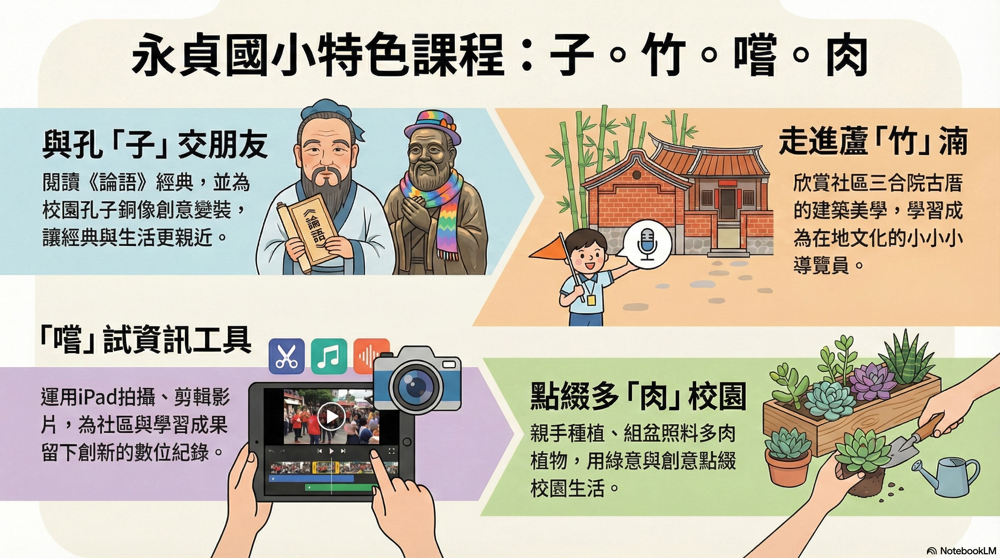
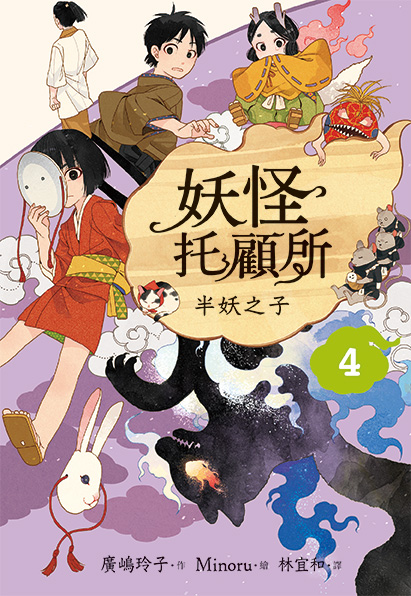
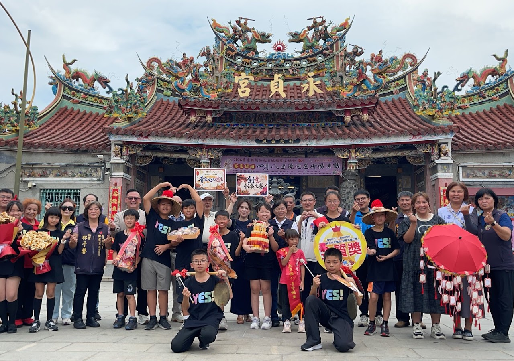
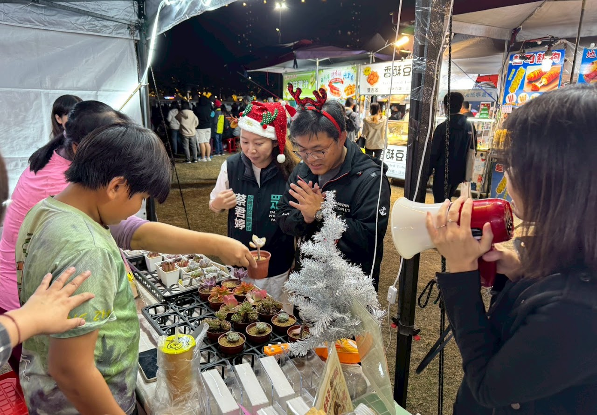
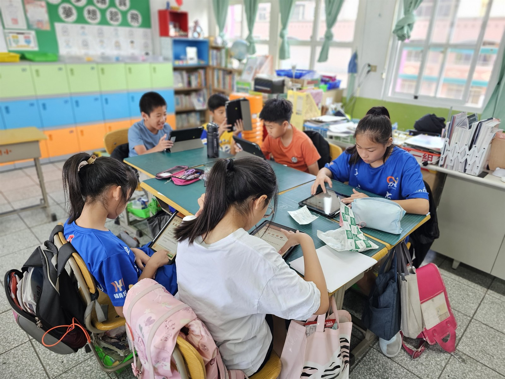
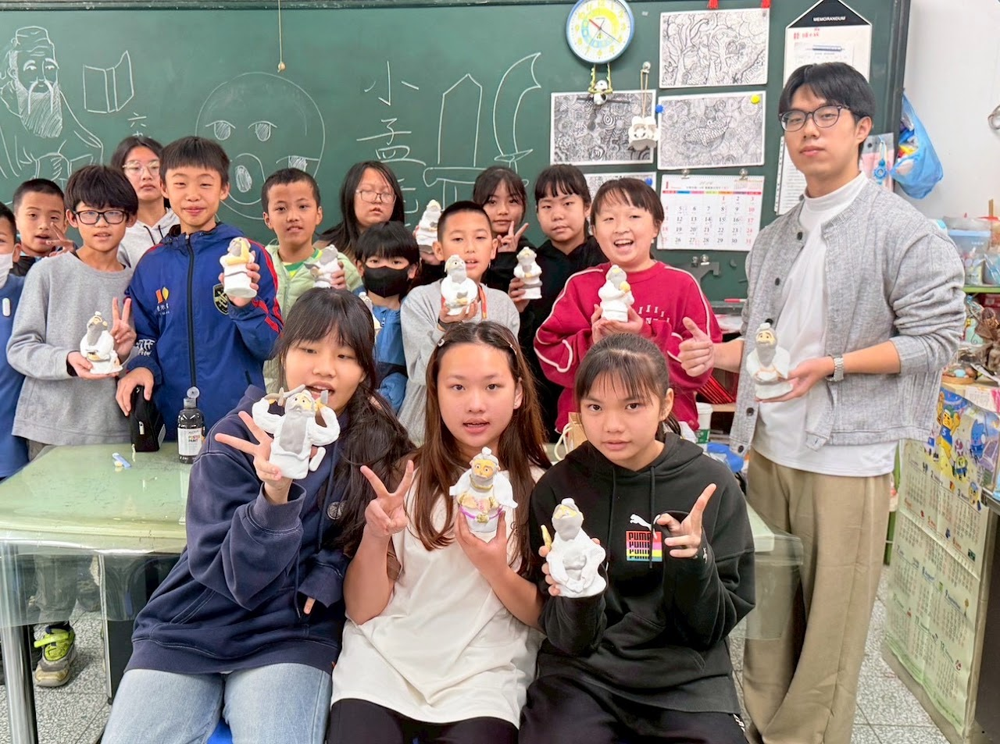

點燃孩子的閱讀熱情，透過每日晨讀 MSSR、明日說書人有聲導讀、特色校本課程「子竹嚐肉」與多元主題書展，打造全校沉浸式書香樂園！
從課堂引導到跨領域專題，永貞國小以多元靈活的策略拓展學生視野
以「書香永恆，貞惜閱讀」開展主題書展、經典走讀與跨域素養教案，榮獲苗栗縣114學年度跨領域素養導向教案首獎與特優肯定！

校本跨域特色結合在地歷史文化、客家傳統飲食與現代閱讀探究，榮獲客家電視台專訪報導，包含完整 Canva 數位互動簡報與學習單成果！
推行身教式持續安靜閱讀（MSSR），融合早修雙語廣播劇 Podcast《咻！「苗」準世界》，帶領孩子在閱讀中遨遊國際！

語音導讀建置「星際說書聊書學習站」，收錄學童錄製之繪本導讀音檔與文字稿，展現學童表達力與自信風采！
走進綠意盎然的永貞校園，親近溫馨多元的閱讀學習空間，感受師生共讀與跨域探究的蓬勃朝氣

學校願景與課程立足苗栗頭份在地人文，推動深耕閱讀與多元跨域素養發展。

多元學習環境豐富且溫暖的軟硬體教學設施，陪伴每位學童在愛中快樂成長。

綠意校園閱讀角營造無所不在的共讀角落，讓優質好書自然走進孩子們的生活日常。

跨域探索與共學結合科技載具與雙語閱讀推動，深化孩子們的批判思考與自主探究力。
探索圖書館 1.0 至 4.0 空間改建藍圖，營造溫暖自然、明亮舒適的現代書香閱讀殿堂